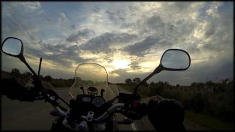
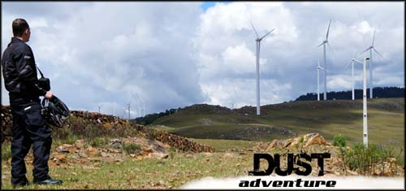
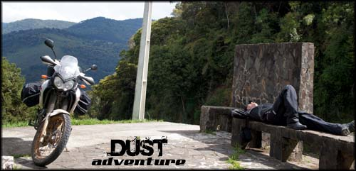

Assim, sem muito planejamento, quase que por acaso, começou minha viagem de moto ao Uruguai.
Depois de muitos anos sem férias no trabalho, finalmente eu tinha 30 dias para aproveitar um clima diferente, e deixar para trás o estresse e as preocupações do dia a dia.
Resolvi que deveria fazer uma viagem mais longa. Cogitei uma viagem normal, pegar um pacote promocional com vôo para algum ponto do mundo que eu gostaria de conhecer, jogar a mochila nas costas e partir.
Maturei essa ideia por algum tempo, mas partir para uma trip dessas sozinho, apesar de eu saber ser uma coisa bem tranquila e ter lido muitos relatos de viajantes, ainda me assustava.
Eu me considero muito tímido e pouco "descolado", e já me imaginava em um lugar desconhecido, quiçá sem entender a língua local, perdido, apesar de considerar meu conhecimento em inglês aceitável para não morrer de fome.
A estrada liberta !
Porém, aos fins de semana, desde que comprei uma moto mais nova em comparação às que eu habitualmente eu possuía, já vinha fazendo pequenas viagens. Conheci um pessoal que se junta para essas rápidas aventuras (no fórum do Ténéré Club), e me animei nesse cenário que fazia uns bons anos eu não vivenciava.
Pensei um pouco, e cheguei a uma conclusão: se é para passar dificuldades quebrando a timidez e me quebrando pedra pra me virar e resolver problemas, que seja de forma bem mais radical. E também, sabe lá até quando minha disposição física vai me permitir encarar uma longa viagem de moto... vou fazer logo isso, depois, se não aguentar mais, quando a idade bater à porta, passo para os roteiros mais tradicionais de viagem.
Tudo bem, não daria para conhecer países europeus, e nem mesmo alguns da própria América do Sul com o que eu tinha de tempo e dinheiro. Mas ainda assim seria uma aventura. Era isso que eu faria.
Destino incerto, mas a certeza de se estar fazendo o que se quer...
Já tinha decidido que iria para o Sul do país. Comecei a relembrar lugares que eu já tinha visto em fotos e relatos, e que me chamaram a atenção. Serra do Rio do Rastro em Santa Catarina, Rastro da Serpente em São Paulo, os cânions no Rio Grande do Sul, a Reserva Ecológica do Taim... opa, se eu chegasse até esse ponto poderia até mesmo visitar o Uruguai, já estaria na fronteira com o Chuy!
Viagem de moto ao Uruguai
Fiz algumas pesquisas básicas, e percebi que dependendo do que fosse acontecendo na estrada eu poderia mesmo chegar tão longe. E resolvi sair de casa com essa possibilidade, de viajar de moto até o Uruguai, mas sem esse compromisso. Se eu só sentisse firmeza em ir até um pouco depois de São Paulo, me daria por satisfeito. Se pudesse ir um pouco mais, melhor ainda. Enfim, o que eu conseguisse fazer nessa viagem já estava valendo, pelo pioneirismo pessoal, nunca tinha ido tão longe e sozinho, e de moto! Ainda mais em uma 250cc.O roteiro que eu rascunhei de início era bem aberto, bastante indefinido. Somente estabeleci alguns lugares por onde queria passar, se desse. Nada de reservas em hotel, iria tentar a sorte para achar hospedagens, e no caminho decidiria por onde ir, o que alterar.
Deixei de levar uma barraca para acampar, acessório que normalmente nos salva em momentos mais complicados em caso de não encontrar hospedagem. Não levei porque a quantidade de bagagem iria aumentar, praticamente dobrar; e também eu duvidava que, carioca que sou, ficaria minimamente confortável em uma barraca no frio do sul, naquela época do ano, com os equipamentos improvisados que tenho.
Os problemas ficam para trás...
No fim das contas até utilizei as informações que tinha colhido na internet às pressas para traçar a rota, mas tudo fora de ordem, bem ao acaso, mudando de acordo com dicas de moradores locais. E no fim concluo que foi muito bom fazer assim, a sensação de liberdade em uma viagem de moto fica ainda maior.
Assim vou deixar aqui o relato sobre minha viagem de moto ao Uruguai, saindo do Rio de Janeiro.
No próximo texto vou falar sobre a moto que utilizei, equipamentos instalados nela, minha bagagem, e o que foi útil ou inútil ter levado. Para acessá-lo, é só seguir esse link: Moto e Equipamentos da Viagem até o Uruguai.